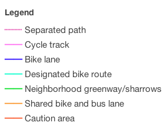

<!DOCTYPE html>
<html lang="en">
    <head>
        <meta charset="utf-8">
        <title>PDX Bike Map</title>
        <meta name="description" content="Super simple bike map viewer for the Portland, Oregon area">
        <meta name="author" content="Mele Sax-Barnett http://pdxmele.github.com/pdxmele">
        <meta name="viewport" content="width=device-width, initial-scale=1.0, maximum-scale=1.0, user-scalable=no">

        <!--css style links-->
        <link rel="stylesheet" href="http://cdn.leafletjs.com/leaflet-0.4/leaflet.css" />
        <!--[if lte IE 8]>
            <link rel="stylesheet" href="http://cdn.leafletjs.com/leaflet-0.4/leaflet.ie.css" />
        <![endif]-->

        <!--js library links-->
        <script src="http://cdn.leafletjs.com/leaflet-0.4/leaflet.js"></script>
       
        <style>
            body {
                padding: 0;
                margin: 0;
            }
            html, body, #map {
                height: 100%;
            }
        </style>
    </head>
    <body>
        <div id="map"></div>
    </body>
 
    <!--my script-->
    <script type ="text/javascript">

        var map = new L.Map('map', {
            center: new L.LatLng(45.516, -122.680),
            zoom: 15,
            maxZoom: 17
        });

        var light = new L.TileLayer("http://a.tiles.mapbox.com/v3/saxbarm.map-27efvqf1/{z}/{x}/{y}.png", {
                attribution: 'Tiles by <a href="http://pdxmele.github.com/pdxmele" target="_blank">Mele Sax-Barnett</a>, <a href="http://www.mapbox.com" target="_blank">MapBox</a>. Map data (c) <a href="http://www.openstreetmap.org/" target="_blank">OpenStreetMap</a> contributors, CC-BY-SA.'
        });
        map.addLayer(light);

        var lightRetina = new L.TileLayer("http://a.tiles.mapbox.com/v3/saxbarm.map-jliolnen/{z}/{x}/{y}.png", {
                attribution: 'Tiles by <a href="http://pdxmele.github.com/pdxmele" target="_blank">Mele Sax-Barnett</a>, <a href="http://www.mapbox.com" target="_blank">MapBox</a>. Map data (c) <a href="http://www.openstreetmap.org/" target="_blank">OpenStreetMap</a> contributors, CC-BY-SA.'
        });

        var neon = new L.TileLayer("http://a.tiles.mapbox.com/v3/saxbarm.map-xdgh3mb4/{z}/{x}/{y}.png", {
                attribution: 'Tiles by <a href="http://pdxmele.github.com/pdxmele" target="_blank">Mele Sax-Barnett</a>, <a href="http://www.mapbox.com" target="_blank">MapBox</a>. Map data (c) <a href="http://www.openstreetmap.org/" target="_blank">OpenStreetMap</a> contributors, CC-BY-SA.'
        });

        var neonRetina = new L.TileLayer("http://a.tiles.mapbox.com/v3/saxbarm.map-adxmvqk8/{z}/{x}/{y}.png", {
                attribution: 'Tiles by <a href="http://pdxmele.github.com/pdxmele" target="_blank">Mele Sax-Barnett</a>, <a href="http://www.mapbox.com" target="_blank">MapBox</a>. Map data (c) <a href="http://www.openstreetmap.org/" target="_blank">OpenStreetMap</a> contributors, CC-BY-SA.'
        });

        var terrain = new L.TileLayer("http://a.tiles.mapbox.com/v3/saxbarm.map-8b6kmkd3/{z}/{x}/{y}.png", {
                attribution: 'Tiles by <a href="http://pdxmele.github.com/pdxmele" target="_blank">Mele Sax-Barnett</a>, <a href="http://www.mapbox.com" target="_blank">MapBox</a>. Map data (c) <a href="http://www.openstreetmap.org/" target="_blank">OpenStreetMap</a> contributors, CC-BY-SA.'
        });

        var terrainRetina = new L.TileLayer("http://a.tiles.mapbox.com/v3/saxbarm.map-zq91uw8d/{z}/{x}/{y}.png", {
                attribution: 'Tiles by <a href="http://pdxmele.github.com/pdxmele" target="_blank">Mele Sax-Barnett</a>, <a href="http://www.mapbox.com" target="_blank">MapBox</a>. Map data (c) <a href="http://www.openstreetmap.org/" target="_blank">OpenStreetMap</a> contributors, CC-BY-SA.'
        });

        map.addControl(new L.Control.Layers({"Light":light, 'Light retina':lightRetina, "Neon":neon, 'Neon retina':neonRetina, "Terrain":terrain, 'Terrain retina':terrainRetina}, {}));
        
        //hacked together legend from choropleth example, just using a screenshot of my auto-generated TileMill/MapBox legend
        var legend = L.control({position: 'bottomright'});
            legend.onAdd = function (map) {

                var div = L.DomUtil.create('div', 'info legend');;
                    div.innerHTML = ''
                return div;
            };

        legend.addTo(map);

        /*various other optional location stuff from leaflet mobile example
        function onLocationFound(e) {
            var radius = e.accuracy / 2;
            L.marker(e.latlng).addTo(map)
                .bindPopup("You are within " + radius + " meters from this point").openPopup();
            L.circle(e.latlng, radius).addTo(map);
            }*/

        function onLocationError(e) {
            alert(e.message);
            }
        //map.on('locationfound', onLocationFound);
        map.on('locationerror', onLocationError);
        map.locate({setView: true, maxZoom: 16});
    
    </script>

</html>